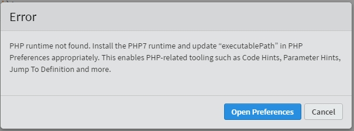
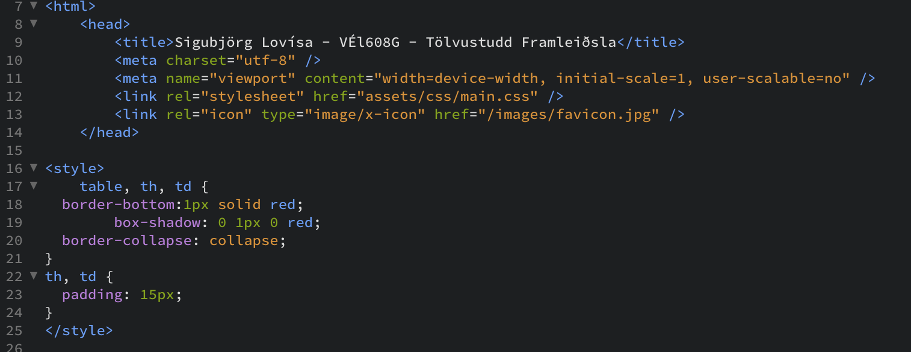
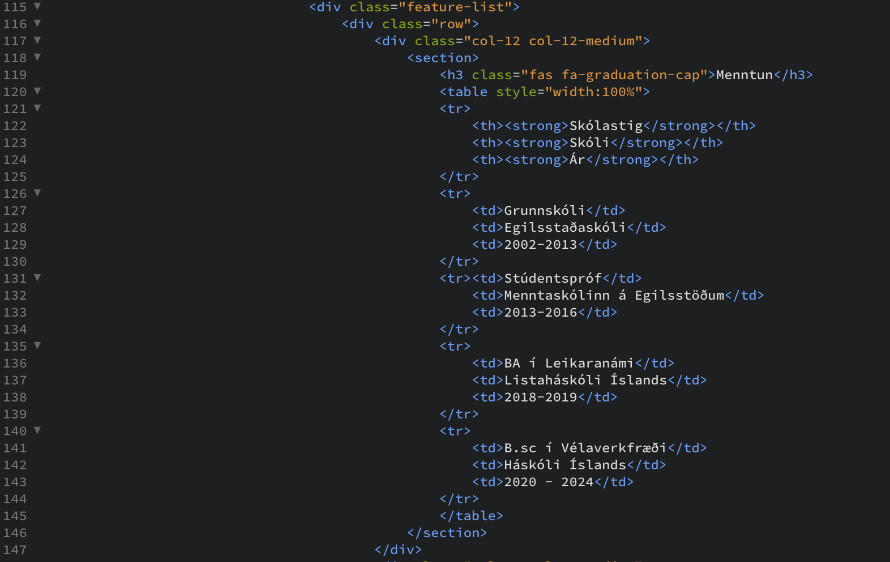

Lýsing á verkefni: Búðu til vefsíðu sem er þitt portfolio
Veldu eða smíðaðu html sniðmát fyrir vefsíðuna þína, skipulegðu hana með upplýsingum um þína ferilskrá. Skrásettu ítarlefa hvernig þú framkvæmdir fyrsta verkefnið og settu á github með því að nota Git bash.
Drög að hugmynd og tilraunir
Við úrlausn á þessu verkefni fannst mér skipta meginmáli að ég gengi vel undirbúin til verks. Ég var því bæði búin að kynna mér ítarefni frá kennara ásamt því að fletta sjálf í allskyns kennsludæmum á netinu áður en ég náði í forritið Brackets. Eins og við svo mörg önnur verkefni þá hefur mér alltaf þótt gott að byrja á grófri leit á Google. Þannig varð fyrsta leitarorðið mitt "How to create website with HTML" og að sjálfsögðu stóðu svörin ekki á sér. Hér er fyrsta vefsíðan sem ég skoðaði. Wikihow hefur oft reynst mér vel og virtist rökrétt að byrja þar. Þar er oft farið í flókin verkefni á einfaldan máta. Auk þess var ítarefni w2schools einstaklega hjálplegt.
Það fyrsta sem ég lærði var hvernig ætti að tengja hlekk á síðu við texta þannig að þegar smellt er á texta opnist umbeðin vefsíða. Það er gert með því að nota skipunina:
<a href="url">link text</a>
Hér gefur <a> til kynna að um "hyperlink" sé að ræða, href geymir vefsíðuhlekkinn og að lokum er hlekknum gefið nafn. Ég sá strax að ég þyrfti að læra margar skipanir og styttingar á orðum sem gefa til kynna um hvernig efni ég er að vinna hverju sinni. Í þessu námskeiði mun ég því safna að mér orðabók sem lýsir þeim skipunum sem ég nota. Orðabókina er hægt að nálgast HÉR
Ég sá það fljótlega eftir að ég byrjaði að vinna verkefnið að best væri að byrja á því að gera header og footer rétta áður en ég færi að vinna mikið í undirsíðunum. Annars hefði ég verið að búa til meiri vinnu fyrir mig að afrita kóða fyrir hverja vefsíðu. Ég setti mér því markmið að gera header og footer eins tilbúna og ég gat út frá sniðmátinu sem ég hafði hlaðið niður af html5up.net. Sniðmátið sem ég valdi mér heitir „Escape Velocity" og ástæðurnar fyrir því að ég valdi það voru nokkrar; Ég vildi hafa fellivalmynd efst á síðunni, ég vildi hafa upplýsingar um mig á forsíðunni svo ferilskráin mín væri það fyrsta sem tæki á móti notanda ásamt því að mig langaði að skoða hvernig „Hafa samband" viðmót er hannað og að hverju þarf að huga í sambandi við það. Það reyndist mér hinsvegar mjög erfitt. Til þess að búa til Contact form þarr html skjalið að innihalda .php skjal. PHP er í raun html skjal sem „gerir eitthvað". Í þessu tilfelli er þetta output sem skilar netfanginu mínu inputi frá notanda sem vill komast í samband við mig. Mér misfórst aðeins í yfirferð um innihald sniðmátsins en þar var nú þegar .php skrá í möppunni en ég bjó til nýja með kóða af netinu og fékk hana ekki til að virka. Það kom þó ekki að sök þegar ég áttaði mig á þessari villu. Hinsvegar kom þá önnur villa í ljós. Í brackets útgáfunni kemur upp villumelding þegar ég opna PHP skránna. Sjá mynd.
Ég lenti í smá basli þar sem mér líkaði ekki alveg við útlitið á síðunni. Mig langaði aðeins að breyta þemanum frá því sem það upprunalega var og það krafðist þess að ég breytti nokkrum hlutum í CSS-skránni; main.css. Í þeirri skrá eru í raun allar útlitsreglur sniðmátsins vistaðar. Kosturinn við að styðjast við þetta main skjal í stað þess að breyta í hverju einasta síðuskjali er að þarna er heildarþema sem nær yfir allar síðurnar og heldur þemanu því á milli skjala/síðna. Hér fyrir neðan er kóði sem snýr að valstikunni sem í CSS er titluð nav. Þar má sjá hvernig hin helstu útlistmál í valstiku eru ákvörðuð.
Mikið af þeirri vinnu sem ég gerði fyrir vefsíðuna fólst einfaldlega í því að gera hana þannig að mér þætti hún fallegri. Ég breytti mikið til í CSS skjalinu svo allar yfirskriftir textta væru í rauðum lit sem er með HEX númerið #ff0000. Mig langaði líka að forsíðan væri ferilskráin mín en fannst samt að effst á henni þyrfti að vera titill námskeiðs. Ég sé fyrir mér að fjarlægja heiti námskeiðs að því loknu og nota vefsíðuna áfram fyrir ferilskrá og þau verkefni sem ég mun koma til með að vinna á næstu árum.
Myndirnar fimm af mér og mínum áhugamálum reyndist mér erfitt að finna útúr fyrst þar sem ég áttaði mig ekki alveg á stærðarhlutföllunnum í CSS skjalinu. En eins og svo oft áður þá hafa verið settar fram einhverjar hönnunarforsendur þar sem svo er unnið út frá í HTML. Til þess að þær komi allar saman í línu og jafn stórar notaði ég <div class:"container>. <div> skilgreinir kafla (e.section) og er notað „gámur" e. container fyrir HTML þætti skjalsins sem eru svo hannaðir út frá CSS-skjalinu.

Myndunum sjálfum stillti ég svo líka inni í undirkafla, sem studdist við reglur úr CSS skjalinu sem sögðu til um stærð hluta á síðunni, undir gámakaflanum, þá er ég í raun að geyma efni (myndirnar) sem gætu tildæmis innihaldið slóð sem vísaði annað ef notandi smellir á myndina inni í gámnum (container). Þetta er svo allta sett saman í undir aðra stærri regnhlíf sem styðst við "features" reglur úr CSS skjalinu. Hér á eftir eru myndir sem lýsa þessum dæmigerðu reglum.


Ferilskránna sjálfa langaði mig að hafa einfalda og stílhreina. Ég var ekki sátt með útlitið á töflunni fyrir en vildi þó ekki endilega breyta þeim reglum sem CSS skjalið bjó yfir. Töflurnar sem CSS geymir eru mjög einfaldar og óspennandi, auk þess sem fyrsti stafur í setningu var alveg upp við vinstri línu töflunnar. Til þess að breyta töflu-ásýnd á tiltekinni síðu en eiga ennþá CSS sniðmátið þá setti ég eftst í skjal tiltekinnar síðu eftirfarandi skipanir. Þannig gat ég búið til töflu-ásýnd sem átti aðeins við þessa tilteknu síðu.
Myndirnar af litlu táknunum sem áttu að lýsa því hvað stæði á hverjum stað í ferilskránni nálgaðist ég í gegnum FontAwesome. Það er frí vefsíða sem býður upp á þúsundir tákna og má setja inn með eftirfarandi skipun: <h3 class="fas fa-graduation-cap">Menntun</h3>. Hér er ég að segja að ég ætli að nota Heading 3 sem er bara útlit á yfirskrift sem skilgreint er í CSS. Class segir mér í raun bara að innan gæsalappanna sem á eftir fylgja geti ég sótt einhversskonar HTML efni sem FontAwesome vissulega er. Að lokum hef ég svo skrifað um hvað kaflinn fjallar sem er menntun og loka svo aftur með Heading 3.
Undir því skilgreindi ég svo að ég ætlaði að búa til töflu. Það er gert með skipuninni <table>, innan þess klasa bý ég svo til röð í töflunni, táknuð <tr> og að lokum hvað skal vera í röðinni. Til að fara á milli dálka má nota skipunina table data, <td> # </td>. Hér nota ég # til að útskýra að skrifað er á milli table data skipunarinnar.
Varðandi stærð á fyrstu tveimur töflunum vildi ég að þær fylltu alveg inn í það svæði sem CSS hafði skilgreint nothæft. Í CSS filenum var einnig búin að skilgreina 12 stærðir af efni og þess vegna notaði ég <div class="col-12 col-12-medium"> sem segir að ég ætli í raun að nota 12/12 mögulegum slottum eða bara fulla stærð. Það sama gildir svo um dálkana tvo minni sem birtast hlið við hlið, en þar hef ég ákveðið að nota aðeins 6/12 fyrir efni og því komast tveir klasar fyrir.
Footernum breytti ég ekki neitt, að öðru leyti en að setja inn upplýsingar um mig. Og leysa vandamálið með Contact formið.